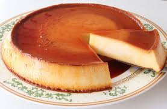

Receta de Pastel de Chocolate

Ingredientes:
- 360 gramos de Cacao En Polvo
- 175 mililitros de Café expreso
- 235 mililitros de Leche
- 440 gramos de Harina
- 1 cucharadita de Bicarbonato Sódico
- ½ cucharaditas de Sal
- 565 gramos de Mantequilla
- 600 gramos de Azúcar
- 4 Huevos grandes
- 1 cucharada de Extracto De Vainilla
- 240 gramos de Azúcar Glas
- 170 gramos de Queso Blanco Para Untar
- 250 gramos de Chocolate de cobertura
- 175 gramos de Nata Para Montar
- 1 cucharadita de Vinagre
Preparación:
primero hay que tamizar la harina con la sal y el bicarbonato en un cuenco.
En otro recipiente mezcla 160 g de cacao en polvo con el café y la leche.
Bate, con varillas eléctricas, 375 g de mantequilla a temperatura ambiente de 3 a 5 minutos,
hasta que esté muy cremosa. Añade el azúcar poco a poco, mientras se continúa batiendo (3 o 4 minutos más).
Incorpora la vainilla y los huevos de uno en uno, y bate 4 minutos más. Agrega a la preparación anterior
la mezcla de harina y la de cacao y café, poco a poco y alternándolas.
Remueve bien con una espátula cada vez que se añade una de ellas.
Engrasa un molde de tarta redondo, de unos 20 cm de diámetro, con mantequilla. Vierte la masa obtenida en él
y cuece 1 hora, en el horno precalentado a 175º. Retira y deja que se enfríe por lo menos 1 hora.
Iguala el bizcocho cortando con un cuchillo la parte superior si hubiera quedado un poco abombada.
Después, córtalo por la mitad en horizontal para obtener 2 discos.
Bate la nata con el vinagre, mejor con varillas eléctricas, ½ minuto o 1 minuto, hasta que tenga cuerpo.
Reserva en la nevera. Tamiza el azúcar glas con 200 g de cacao. Bate, también con varillas eléctricas,
el queso blanco con 185 g de mantequilla, ambos a temperatura ambiente, 5 o 6 minutos, a velocidad media-alta.
Incorpora la mezcla de cacao y azúcar, y sigue batiendo 4 o 5 minutos a velocidad media-baja.
Trocea el chocolate de cobertura, fúndelo al baño María y añádelo a la preparación anterior.
Agrega la crema agria y mezcla. Coloca uno de los discos de bizcocho en una fuente de servir para poder montar
la tarta a capas. Cubre una parte con la crema de chocolate, coloca el otro disco encima y cubre la superficie
y los laterales de la tarta con el resto de la crema. Reserva el pastel de chocolate en la nevera hasta la hora de servir.
Receta de Flan Napolitano

Ingredientes:
- 6 huevos XL
- 400 ml de leche condensada
- 500 ml de leche evaporada
- 300 g de queso crema
- 100 g de azúcar
- 5 Galletas Marías troceadas
- 1 Rama de Menta desinfectada
- 1 Limón (su ralladura)
Preparación:
Empezamos poniendo en un bol 6 huevos XL con 400 ml de leche condensada,
500 ml de leche evaporada y 300 g de queso crema. Batimos bien toda la
mezcla para que no quede ningún grumo y la reservamos mientras preparamos el caramelo.
Para hacer el caramelo, ponemos en un cazo 100 g de azúcar y lo llevamos fuego medio.
Es muy importante no tocar el caramelo mientras se hace, para que no se cristalice.
Esperamos a que comience a dorarse y cuando tenga un color tostado lo retiramos del fuego.
Verteremos el caramelo en el molde inmediatamente después de que lo hayamos hecho y lo extendemos por toda la base.
Una vez frío el caramelo en el molde, llenamos poco a poco el molde con la mezcla líquida del flan.
Llevamos el molde a una bandeja honda de horno para cocinar el flan al baño maría. El horno debe estar precalentado
con a 170 ºC con calor arriba y abajo. Una vez dentro del horno el molde sobre la bandeja, vertemos en la bandeja
agua caliente hasta cubrir la mitad del recipiente. Cocinamos el flan durante 1 hora y 15 minutos sin abrir el
horno mientras se hace. Pasado este tiempo lo sacamos del horno, dejamos que se enfríe y lo guardamos en la
nevera durante al menos 4 o 5 horas (mejor si es de un día para otro).
A la hora de desmoldar el flan, pasamos un cuchillo por todos los bordes para facilitar el desmoldado.
Damos la vuelta al flan sobre un plato más grande que el molde. Veremos que en su interior hay caramelo líquido
que nos hará de salsa a la hora de servirlo.
Comentarios